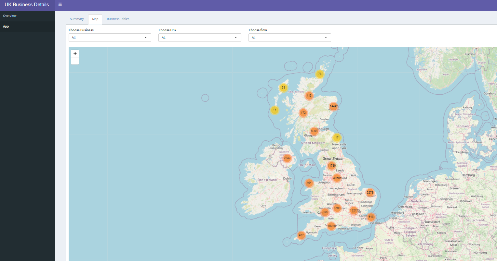

Louise's data portfolio
louise.anokye1@hotmail.co.uk | LinkedIn | GitHub
Welcome to my official Data portfolio page!
I am Louise Anokye, an economist by profession with a strong passion for data science. My journey in economics has provided me with a solid foundation in analytical thinking, problem-solving, and data-driven decision-making.
Now, I am excited to leverage these skills as I transition into the dynamic field of data science.
Over the past few years, I have been expanding my expertise beyond traditional economics, diving into the world of data analysis, data visualisation, and statistical modeling.
This portfolio is a reflection of that journey— a collection of projects where I’ve applied my skills to solve real-world problems, uncover insights, and build predictive models.
Technical Skills:
- Proficient in: R, Excel
- Mid-level knowledge of: Python, HTML, CSS
- Basic understanding of: SQL
Project 1: UK/EU import PUR apps

Project 2: The UK Business Details app

Project 3: Econometrics project